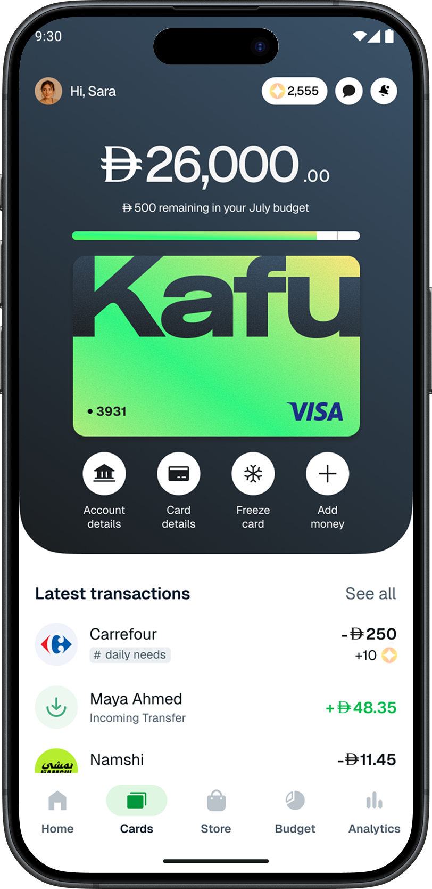
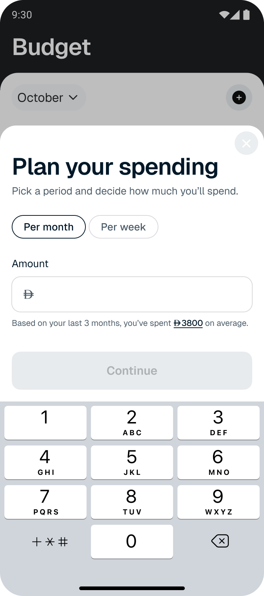
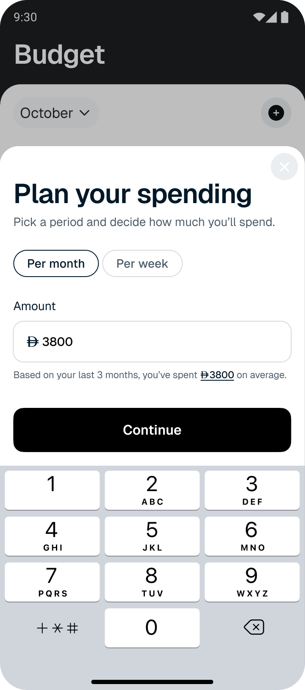
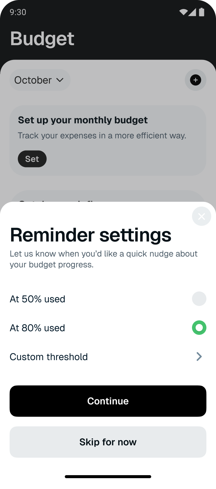
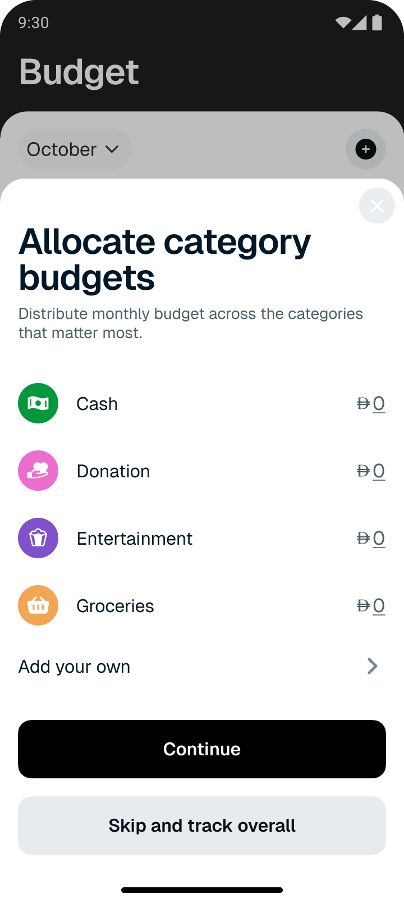
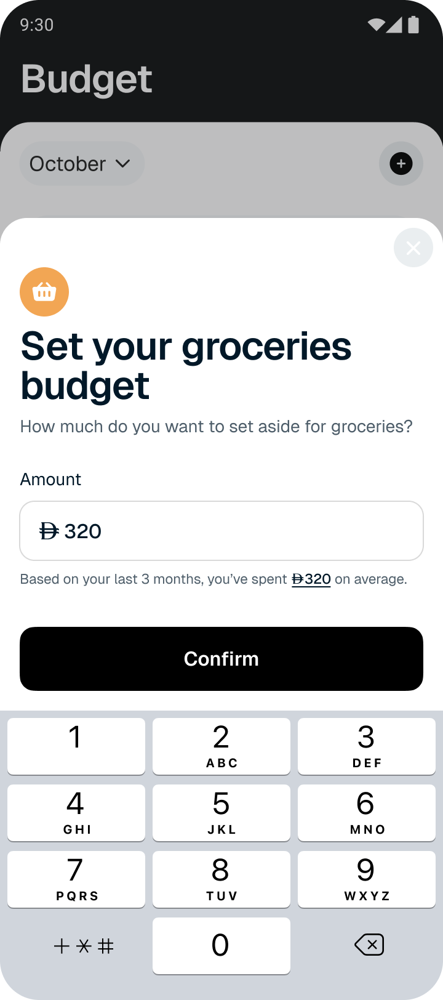
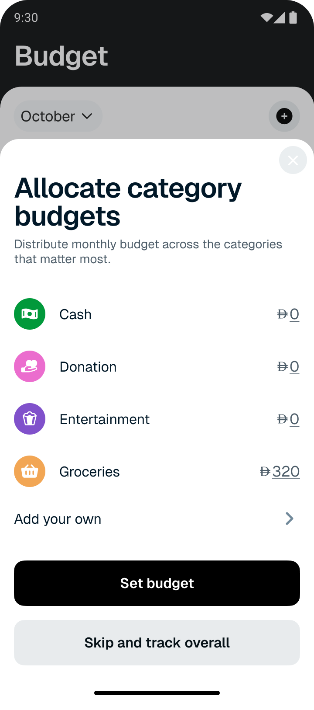
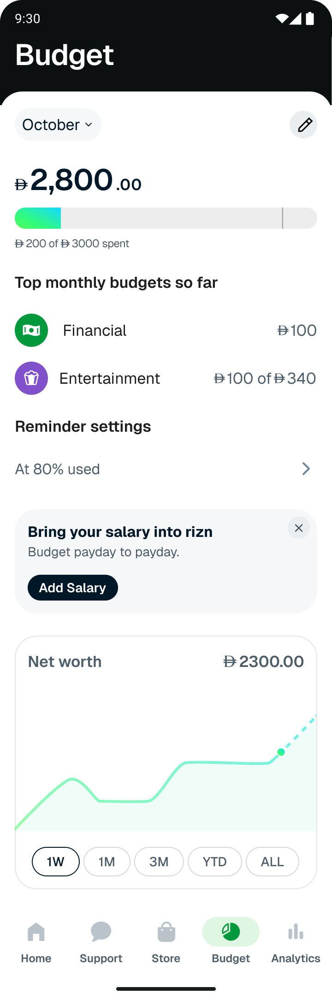
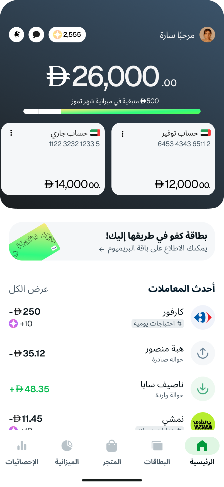

Самостоятельное исследование того, как финтех-приложение могло бы вывести месячный бюджет на передний план — чтобы помогать до, а не после того, как пользователь выходит за рамки.
РОЛЬ
Продуктовый дизайнер
ТИП
Самостоятельное исследование
СРОКИ
2025
ОТРАСЛЬ
Финтех / Мобильное приложение
Обзор
Мобильные банки хорошо показывают, что уже потрачено. Заметно хуже — сколько ещё осталось, пока ещё есть время на это среагировать. Это исследование переворачивает приоритет: вынести понятный, постоянно видимый ответ на вопрос «сколько ещё можно потратить?» на первый план — туда, где он действительно может изменить поведение.
На выходе — функция бюджета для гипотетического финтех-приложения «Kafu» в ОАЭ: следит за расходами в течение месяца, подсвечивает категории, в которых деньги «утекают», и аккуратно предупреждает до того, как лимит будет пробит.
Постановка
Молодые работающие пользователи в ОАЭ незаметно «уходят в минус» ещё до зарплаты. Кофе по дороге на работу, такси, доставка еды и забытые подписки складываются быстрее, чем кажется. Банковское приложение показывает итоги — но только тогда, когда деньги уже потрачены. Рамка исследования простая: спроектировать функцию, которая даёт ощущение остатка в реальном времени, не действуя при этом на нервы.
Два сигнала подсказали бы, что подход работает:
Доля «уложившихся в бюджет»
Процент пользователей, закрывших месяц в рамках лимита, который они сами для себя поставили.
Частота заходов в бюджет
Как часто пользователи открывают экран бюджета — косвенный показатель того, что функции достаточно доверяют, чтобы к ней возвращаться.
Исследование
Я собрал представительные цитаты от молодых работающих специалистов и сгруппировал их в аффинити-карту. Несколько повторяющихся реплик:
«Кофе по дороге на работу беру почти каждый день, не задумываясь.»
«Хотел бы быстро видеть, сколько ещё можно потратить.»
«Уведомление на 80% — полезное, всё, что раньше — игнорирую.»
Сложились четыре кластера. Каждый — с конкретным дизайн-выводом.
01
Слепые траты
Кофе, такси и мелкие бесконтактные платежи происходят на автопилоте. Кнопка «залогировать» в пуше убила бы автокатегоризацию, ради которой и стоит держать приложение под рукой — задачу видимости решаем через категоризацию, а не через ручной ввод.
02
Нет ощущения остатка в реальном времени
Люди проверяют баланс, только когда что-то их к этому подталкивает. Состояние бюджета должно «висеть на виду» — постоянный виджет на главной или отдельная вкладка — чтобы его замечали без специальных усилий.
03
Путаница в категориях
«Я записал Uber как “Такси” или как “Транспорт”?» Умная автокатегоризация снижает усталость от выбора; возможность поправить позже сохраняет агентность.
04
Настройки и тайминг уведомлений
Уведомления должны быть полезными, а не шумными. Настраиваемые пороги (80%, 90%, 100%) и snooze уважают, как именно каждый хочет получать предупреждения.
Карта пути клиента
Упрощённая CJM на типичный месячный цикл: настроение падает от «зарплаты» к концу месяца, на каждой стадии — своё трение и своя возможность вмешаться.
Настроение
Позитив
Нейтрально
Негатив
Этап
День зарплаты
День 1
Начало месяца
Дни 2–10
Середина месяца
Дни 11–20
Конец месяца
Дни 21–конец
Касание
Push-уведомление
Уведомление о зачислении зарплаты.
Бесконтактные платежи
Десятки мелких ежедневных трат по карте.
Сессия в приложении
Заходит, чтобы перевести деньги.
Push о низком балансе
Реактивное уведомление о перерасходе.
Инсайт
Баланс мысленно «обесценивается»
Новый баланс распределён за часы, потрачен за недели.
Мелкие траты не ощущаются «настоящими»
Во время оплат не виден текущий итог — эффект незаметен.
«Я уже превысил бюджет?» — без ответа
Статус приходится искать вручную по экранам.
Уведомление приходит слишком поздно
К моменту срабатывания ущерб уже нанесён.
Возможность
Интервенция 01
Промпт «бюджет на месяц»
Зафиксировать намерение, пока внимание высоко.
Интервенция 02
Автокатегоризация + еженедельная сводка
Сделать невидимые траты видимыми.
Интервенция 03
Постоянный виджет бюджета
Всегда на виду, без лишних усилий.
Интервенция 04
Проактивные уведомления 80% / 100%
Предупредить до пробития лимита по категории.
Пользовательские истории
Кластеры и CJM сложились в пять историй, которые задали MVP-скоуп.
Постоянный виджет бюджета
«Как пользователь, я хочу видеть остаток беглым взглядом — без отдельного экрана — чтобы не терять ощущение, где я в месяце.»
Автокатегоризация
«Как пользователь, я хочу подсказку категории при логировании траты — чтобы тратить меньше времени на сортировку.»
Свои пороги уведомлений
«Как пользователь, я хочу выбирать, когда меня предупреждают — 80%, 90%, 100% — чтобы алерты были полезными, а не назойливыми.»
Промпт «бюджет на месяц»
«Как пользователь, я хочу быстро ставить бюджет в начале каждого месяца, чтобы не приходилось об этом помнить.»
Топ трат
«Как пользователь, я хочу видеть свои самые крупные расходы беглым взглядом — чтобы понимать, где сократить, не перебирая каждый чек.»
Конкурентный анализ
Посмотрел внимательно, как с бюджетом обращаются N26 и Revolut на iOS. Оба сильные конкуренты с пересекающейся аудиторией.
N26
Показывает средние траты за последние 3 месяца, удобный якорь при выставлении бюджета
Один общий месячный лимит; минимум трения при настройке
Бюджет живёт внутри раздела аналитики
Revolut
Бюджет по категориям: полезная гранулярность для продвинутых пользователей
Больше настроек на старте; вознаграждает аккуратную настройку
Бюджет тоже спрятан под аналитику
Самое интересное оказалось не в фичах, а в вопросе размещения. Оба приложения держат бюджет внутри «Аналитики», но это разные ментальные режимы. Аналитика ретроспективна: что я уже потратил? Бюджет проактивен: сколько ещё можно? Если бюджет это ежедневная функция, она заслуживает места в нижнем таб-баре, а не на под-странице в двух тапах.
Процесс и решение
MVP свёлся к четырём продуктовым решениям — каждое привязано к конкретному кластеру исследования.
Постоянный виджет бюджета на главной
«Использовано / Всего» с прогресс-баром, видно сразу при открытии. Без лишних тапов.
Умная автокатегоризация
Приложение предлагает категорию по мерчанту и сумме; пользователь подтверждает или меняет.
Свои пороги уведомлений
80% / 90% / 100% — любая комбинация. Snooze на час, на день, до следующей зарплаты.
Промпт «бюджет на месяц»
1-го числа (или когда приходит зарплата) — экран с одним вопросом «установить бюджет на месяц».

Полный флоу бюджетирования: задать сумму на месяц, выбрать порог напоминаний, распределить бюджет по категориям и перейти к живому обзору цикла.

01Запланируйте траты

02Введите сумму

03Выберите напоминание

04Распределите по категориям

05Бюджет на категорию

06Подтверждённое распределение

07Следите за циклом
Итерация и обратная связь
Внутренний фидбэк и неформальные тесты подсветили одну возможность для второго прохода.
Адаптация на арабский / RTL
Половина аудитории ОАЭ читает по-арабски. Я собрал прототип экранов бюджета в RTL — проверить, что виджет, прогресс-бар и список категорий нормально переживают зеркальное отражение. (Арабская версия будет смотреться лучше, как только мы зафиксируем подходящий шрифт.)

Что я вынес
Размещение — это фича
«Бюджет внутри аналитики» против «бюджет в собственной вкладке» — это уже дизайн-решение, и правильный ответ зависит от частоты использования. Ежедневные функции заслуживают места «первого ряда».
Дизайн уведомлений — это вкус, не наука
Универсально «правильного» порога нет — есть «правильный для меня». Возможность выбрать превращает трение в восприятие фичи.
Локализация раньше всего вскрывает дизайн-долг
Сборка арабской / RTL-версии заставила решить вопросы отступов, выравниваний и иконок, которые иначе я бы протащил «как-нибудь» в английском. RTL — это не приложение задним числом; это лакмусовая бумажка.